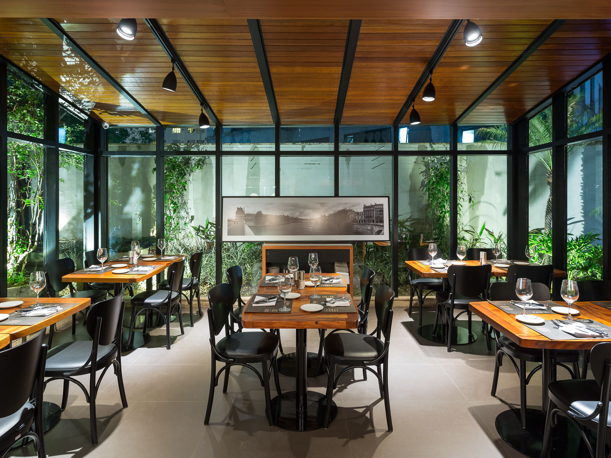

Le Bife
O Le Bife, mais que um restaurante especializado em carnes, é um novo conceito gastronômico inspirado no modelo francês da "Bistronomie" ou "Bistronomia".
Inspirado nos bistrôs franceses, o Le Bife é especializado em cortes nobres de carne preparados com maestria.
Com uma proposta de alta gastronomia em um ambiente sofisticado e ao mesmo tempo acessível,
o restaurante combina sabores clássicos com técnicas contemporâneas. O menu inclui desde cortes premium até
pratos tradicionais da cozinha francesa, como o confit de pato. A carta de vinhos é cuidadosamente selecionada
para harmonizar com as carnes.
